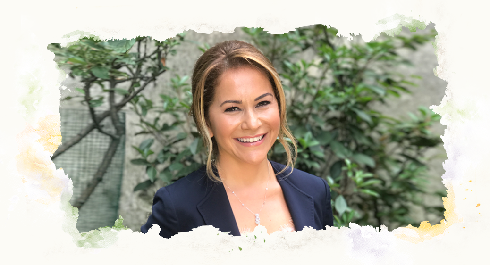

BEN KİMİM?
Gizem ŞEBER Beslenme Danışmanlık ve Eğitim Hizmetleri, 2010 yılında Diyetisyen Gizem Şeber tarafından kurulmuştur.
2010’dan beri 20.000’in üzerinde kişiye bireysel diyet hizmeti vermiş olan Gizem ŞEBER, bu süre zarfında Türkiye Futbol Federasyonu, Ülker, AXA Sigorta, Philips, AÇEV, AstraZeneca, Sodexo, Arbella gibi birçok önemli kurumsal şirketin de danışmanlığını yürütmüştür.
Gizem ŞEBER Beslenme Danışmanlık ve Eğitim Hizmetleri 2015 yılında, insanlara daha derinden dokunmak amacıyla yeni hizmetler ekleyerek ve kadrosuna profesyonel takım arkadaşları katarak hizmet kapsamını genişletmiştir.
Bireysel beslenme danışmanlığı, kurumsal beslenme danışmanlığı ve eğitim-seminer hizmetlerinin yanı sıra, uzman psikolog kadrosuyla bireysel psikoterapi ve dönüşüm atölyeleri düzenleyen Gizem ŞEBER Beslenme Danışmanlık ve Eğitim Hizmetleri, sektörün öncü kurumlarındandır.
UZMAN DİYETİSYEN
Gizem Şeber
2007’de Hacettepe Üniversitesi Beslenme ve Diyetetik Bölümü’nden dördüncülükle mezun olan Gizem Şeber, 2006’da, Erasmus bursuyla Oxford Brookes Üniversitesi’nde bir eğitim dönemini üstün başarıyla tamamlamıştır. İngiltere’deki eğitimi süresince üniversitede sürdürülen Glisemik İndeks bilimsel çalışmalarında gönüllü olarak çalışmıştır.
Eğitimin sonu olmadığına inanan Gizem Şeber, 2009’da ICF onaylı Yaşam Koçu, 2014’teyse Yaşam Koçluğu Eğitimcisi olmuştur. 2015’te Hanna Nita Schler tarafından verilen “Gestalt Uygulayıcı” eğitimi, 2017’de “Gestalt Bakış Açısı ile Kişilik Tipleri” programını ve 2019’da “Gestalt Bakış Açısıyla İlişkisel Yetkinlik” programlarını tamamlamıştır.
2017’de GAPS Diyeti ve GENTEST Diyeti eğitimlerini tamamlayarak GAPS ve GENTEST Uygulayıcısı olmuştur. 2019’da Türkiye Futbol Federasyonu “Futbolcu Beslenmesi” programını başarıyla tamamlayarak TFF lisanslı Sporcu Diyetisyeni olmuştur. Gizem Şeber, yüksek lisansını Kent Üniversitesi’nde Klinik Psikoloji alanında tamamlamıştır.
Gizem ŞEBER, İngiltere ve Türkiye’de sağlıklı beslenme, psikoloji, farkındalıkla ilgili seminer, kongre ve panellerde katılımcı ve konuşmacı olarak yer almış, birçok ulusal dergi ve gazetede uzman yazar ve televizyon programlarında uzman konuk olmuştur. Gizem ŞEBER, mezuniyetinden sonra iki yıl boyunca Özel Alman Hastanesi’nin Beslenme ve Diyet Bölüm koordinatörü olarak çalışmış, 2010’daysa kendi ofisini açmıştır.Uzman Diyetisyen Gizem ŞEBER, Türkiye Diyetisyenler Derneği üyesidir.